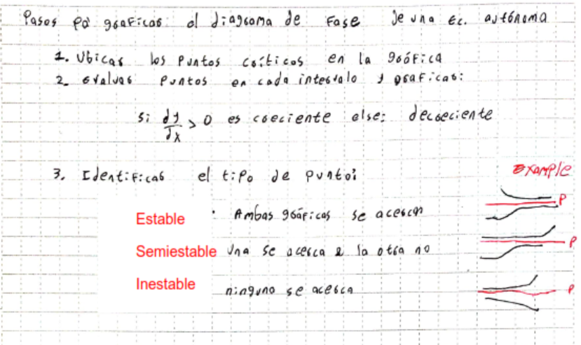

Campo direccional
Grafico que tiene el conjunto de las pendientes de la función
Se puede a partir de este determinar la solución de un PVI ya que en base a este se pueden dibujar curvas soluciones
PASO 0: \(\frac{dy}{dx} = 0\)
| ED | Aquella que | Método de solución |
|---|---|---|
| Separable | \(\frac{dy}{dx} = g(x) h(y)\) |
|
| Lineal | \(a_1(x)\frac{dy}{dx} =+ a_0(x)y = f(x)\) |
|
| Lineal a trozos | ED Lineal donde f(x) está definida a trozos |
|
| Exacta |
|
|
| Sustitución homogenea | Aquella que \(f(tx, ty) = t*f(x, y)\) | Sustituir, buscando llevar la ED a una de variables separables |
| Sustitución | \( \frac{dy}{dx} = f(Ax + By + C)\) | \( u = Ax + By + C \). Hallar \(\frac{du}{dx}\) y reemplazar |
| Sustitución homogenea v2 |
|
Sustituir, buscando llevar la ED a una de variables separables |
| Sustitución Bernoulli | Aquella que \( \frac{dy}{dx} + P(x)y = f(x)y^n\) |
|